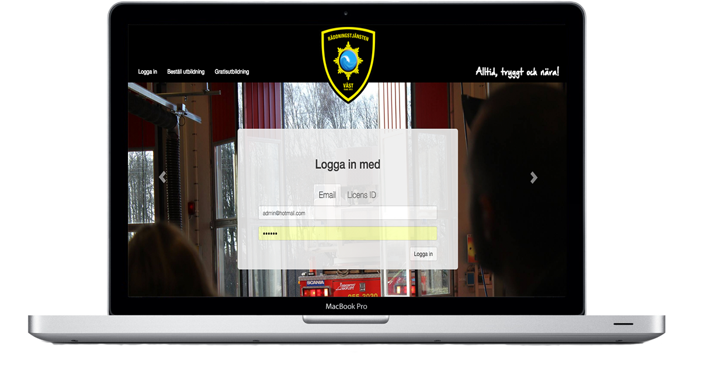

Redo för nya utmaningar!
Jag studerar just nu mitt sista år på Webbdesignprogramet på Halmstad Högskola, där jag tar högskoleexamen till sommaren. Att få jobba med frontendutveckling, design och användbarhet när jag är färdigstuderad är något som jag verkligen vill och har stort intresse för. Jag är redo för att komma ut på arbetsmarknaden och testa mina vingar.
Kunskaper

Portfolio
Brandvägg - Ett samarbete med Räddningstjänsten Väst
Ett examensarbete som syftade till att skapa en interaktiv webblösning för utbildning i brandskyddskunskap åt Räddningstjänsten Väst. Projektet bidrar till att en tidigare utbildning som enbart ägt rum på plats på brandstationen i Falkenberg, nu kan genomföras när som helst, var som helst.
Lärdomar
- Arbeta mot en beställare
- Arbeta med konkreta deadlines
- Utvecklat mina kodfärdigheter
Använda tekniker
- Agila utvecklingsmetoden Scrum
- Illustrationer i Photoshop
- InDesign
- HTML5
- CSS3
- PHP
- GitHub
KorridorSnack
KorridorSnack är skolprojekt där vi skulle skapa ett dynamiskt webbsystem, med hjälp av MVC-ramverket Laravel. Vi programmerade ihop ett forum för studenter där de i olika kategorier kunde lägga upp inlägg.
Lärdomar
- MVC-ramverket Laravel
- Utvecklade mina färdigheter i Photoshop
- Användning av versionhanteringsprogrammet GitHub
Använda tekniker
- Laravel
- Agila utvecklingsmetoden Scrum
- Illustrationer i Photoshop
- GitHub
- HTML5
- CSS3
Hyr&Styr
Ett skolprojekt som syftade till att tillägna sig kunskaper om och förståelse för teorier kring interaktion och interaktionsdesign med användaren i fokus. Vi gjorde en prototyp för en cykeluthyrningsapplikation som skulle lösa transporten mellan Halmstad tågstation och Halmstad Högskola.
Lärdomar
- Goal directed design
- Hur gränssnittets design påverkar användandet av IT-artefakter
- Utforma illustrationer i Illustrator
Använda tekniker
- Agila utvecklingsmetoden Scrum
- Illustrationer i Photoshop och Illustrator
- InDesign
FanBox
Ett skolprojekt där vi skulle skapa en e-handelssida. Vår idée var att göra en webbshop med olika samlingobjekt relaterade till TV-serier.
Lärdomar
- Göra formulär i PHP
- Utvecklade mina färdigheter i Photoshop
- Användning av versionhanteringsprogrammet GitHub
- Göra animationer i jQuery
Använda tekniker
- Agila utvecklingsmetoden Scrum
- Illustrationer i Photoshop
- PHP
- JavaScript
- jQuery
- HTML5
- CSS3